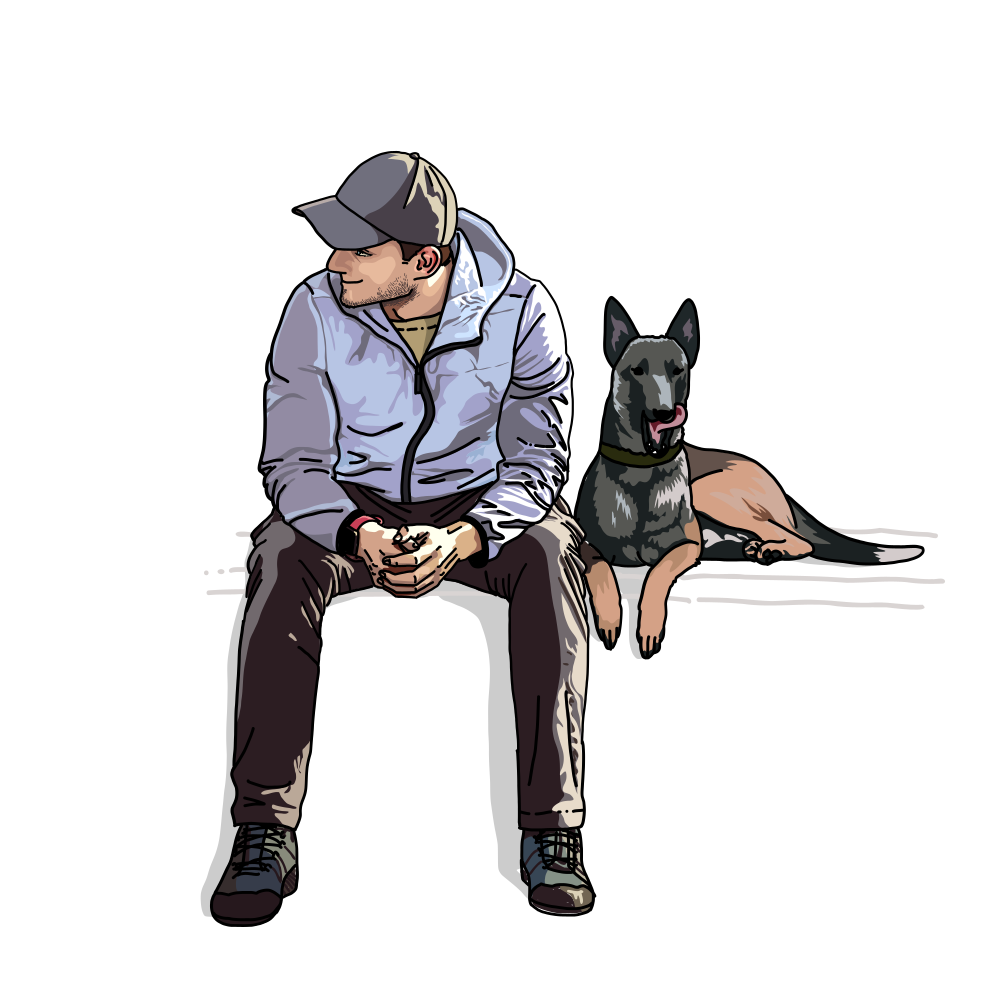

Thank you for
coming my page
Kenny`s portfolio

初めまして。ケニーのポートフォリオにお越しいただきありがとうございます。
静岡出身、学生時代教員を目指す中でプログラミング必修化を耳にし
興味を持ち始め学習開始。
スクールを受講しはれて都内でシステムエンジニアに！
"シンプルと明瞭"をコンセプトに
共感性と創造性をいかして、サイト作りのお手伝いをしていきたいです。
まだまだ拙いスキルですが、ウェブ制作に加え
動画編集、ロゴのデザインからバナー広告まで一貫したデザインを創り上げます。

あなたの魅力を最大限にひきだす世界で一つだけのウェブサイト作成
趣味で描き始めたイラスト。名刺などのアクセントに
一味ちがう、目を引く写真と文言

結婚式からYouTube、旅のVlog等行っております。
主に学習している言語・使用するソフトです
必要であれば学習し、さらに満足していただけるよう努めていく所存です

HTML&CSS

JAVA SCRIPT

PHP

JAVA

PHOTOSHOP

Adobe premier
今までの成果物です。個人的に作った模写サイトやブログが主です。
スキル向上のため、現在も作成中です。
ただいまデザインに焦点を当て、フォントや空間デザインを意識し学習しております。将来の展望として最新情報やトレンドにアンテナをはり、SEOの知識・コンバージョン改善に繋げていけるデザイナーになっていきたいと考えています。


学習情報等シェアしていきますので、よければフォローお願いいたします。